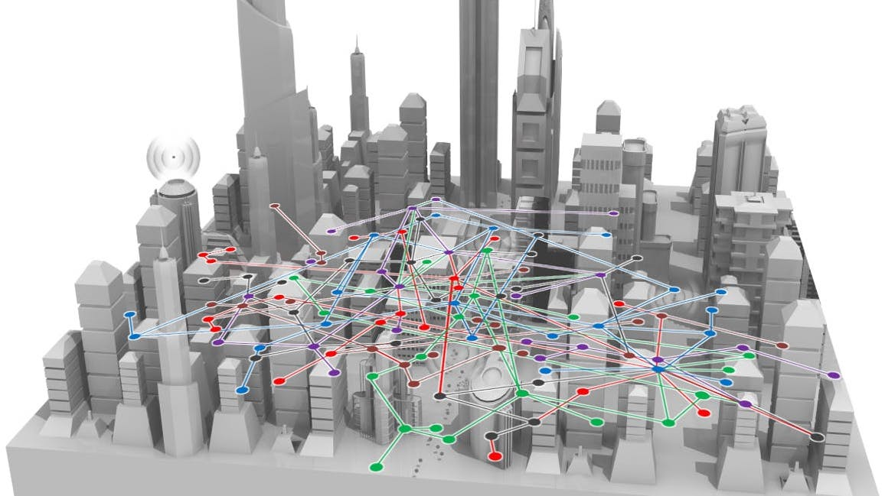

Research
The past decade has witnessed a proliferation of data, where the notion of data science plays a central role in the envisioned many technological advances. A number of applications (like the online recommendation systems, the automatic driving systems, the financial Robo-Advisor systems, etc.) involving big data have already brought huge benefits to many facets of our daily lives. Advances in data analytics motivate a systematic way to uncover the hidden insights, mining the useful information, and carrying forward inferences from these massive datasets. The overarching objective of research in our group is to wed state-of-the-art high-performance methods with the emerging big data problems, in a way that they can inspire and reinforce the development of each other, with the ultimate goal of benefiting our societies. In pursuit of such goals, the research in our group can be summarized into the following topics.
Optimization, Learning, and Inference in Big Data Analytics
This topic aims at developing high-performance methods at the intersection of optimization, signal processing, statistics, and machine learning to address emerging challenges in large-scale data science applications. Especially, this topic will unveil the sparsity, and more generally, low-dimensional structures, in big data analytics. Structured signal processing has attracted much attention in many data-driven problems like sparse representation and inverse problems built upon low-dimensional modeling, including compressed sensing, matrix completion, robust principal component analysis, dictionary learning, super resolution, phase retrieval, neural networks, etc. This topic is aimed to focus on designing optimization-based algorithms that are effective in both theory and practice. |
Related publications:
Ziping Zhao and Daniel P. Palomar, “Sparse Reduced Rank Regression With Nonconvex Regularization,” in Proc. of the 20th IEEE Statistical Signal Processing Workshop (SSP’18), Freiburg, Germany, June 10-13, 2018.
Ziping Zhao and Daniel P. Palomar, “Efficient Sparse Reduced Rank Regression via Nonconvex Optimization,” 2019.
Ziping Zhao and Daniel P. Palomar, “Robust Maximum Likelihood Estimation of Sparse Vector Error Correction Model,” in Proc. of the 5th IEEE Global Conference on Signal and Information Processing (GlobalSIP’17), Montreal, QC, Canada, Nov. 14-16, 2017.
Ziping Zhao and Daniel P. Palomar, “Robust MLE of Reduced Rank Regression Model with Simultaneous Factor and Feature Learning,” 2019.
Ziping Zhao*, Songtao Lu*, Kejun Huang, and Mingyi Hong, “Perturbed Projected Gradient Descent Method with Convergence to Second-Order Stationary Points for Box Constrained Nonconvex Problems,” in Proc. of the 44rd IEEE International Conference on Acoustics, Speech and Signal Processing (ICASSP’19), Brighton, UK, 12-17 May, 2019. (* = eq. contr.)
Signal Processing and Artificial Intelligence for Finance
 |
The application of research ideas from theoretical physics, mathematics, and control theory to the financial markets has been a common industrial practice for now almost three decades. Engineering has also witnessed a steady flow of contributions to the financial world from fields like computer science and optimization theory. Signal processing (SP), without exception, has benefited financial markets substantially through well-known and widely applied techniques as well, to name a few, the Fourier transform, the Kalman filter, and shrinkage methods. Recently years, artificial intelligence (AI) has been largely believed to be a promising technology in the renovation of financial engineering (FinEng), financial technology (FinTech), and financial informatics (FinInfo), where the booming robo-advisor system is a good example. In view of this, this topic is to explore the worlds of finance from perspectives of optimization, signal processing, and AI. |
Related publications:
Ziping Zhao and Daniel P. Palomar, “Large-Scale Regularized Portfolio Selection via Convex Optimization," 2019.
Ziping Zhao, Rui Zhou, Daniel P. Palomar, and Yiyong Feng, “Portfolio Optimization: Where Signal Processing Meets Financial Engineering,” 2019.
Ziping Zhao, Rui Zhou, and Daniel P. Palomar, “Mean-Reverting Portfolio With Leverage Constraint for Statistical Arbitrage in Finance,” IEEE Transactions on Signal Processing (TSP), vol. 67, no. 7, pp. 1681-1695, April 2019.
Ziping Zhao, Rui Zhou, Zhongju Wang, and Daniel P. Palomar, “Optimal Portfolio Design for Statistical Arbitrage in Finance,” in Proc. of the 20th IEEE Statistical Signal Processing Workshop (SSP’18), Freiburg, Germany, June 10-13, 2018.
Ziping Zhao and Daniel P. Palomar, “Mean-Reverting Portfolio Design With Budget Constraint,” IEEE Transactions on Signal Processing (TSP), vol. 66, no. 9, pp. 2342-2357, May 2018.
Ziping Zhao and Daniel P. Palomar, “Mean-Reverting Portfolio Design via Majorization-Minimization Method,” in Proc. of the 50th Asilomar Conf. on Signals, Systems, and Computers (ACSSC’16), Nov. 2016, pp. 1530–1534.
High-Performance Methods for Intelligent Networked Systems
|  | Multiple-input and multiple-output (MIMO) technology has attracted much attention in systems like sonars, radars, and communications, because it offers significant increases in data throughput and link range without an additional increase in bandwidth or transmit power. Recently year, MIMO techniques have been proven to be capable of increasing the capacity or decreasing the transmit power upon commensurately increasing the number of antennas. Hence, the concept of large-scale MIMO system has attracted substantial research attention and been regarded as a promising technique for next-generation wireless communications and radar. With the enlargement of the number of antennas, the complexity of signal processing like transmit precoding design and channel estimation and detection has also been tremendously increased. This topic is to address the large-scale signal processing problems, especially the optimization issues in large-scale MIMO systems. |
Related publications:
Ziping Zhao*, Rui Zhou*, and Daniel P. Palomar, “Unified Framework for Minimax MIMO Transmit Beampattern Matching Under Waveform Constraints,” in Proc. of the 44rd IEEE International Conference on Acoustics, Speech and Signal Processing (ICASSP’19), Brighton, UK, 12-17 May, 2019. (* = eq. contr.)
Ziping Zhao and Daniel P. Palomar, “MIMO Transmit Beampattern Matching Under Multiple Waveform Constraints: A Unified Approach,” 2019.
Ziping Zhao and Daniel P. Palomar, “MIMO Transmit Beampattern Matching Under Waveform Constraint,” in Proc. of the 43rd IEEE International Conference on Acoustics, Speech and Signal Processing (ICASSP’18), Calgary, AB, Canada, April 15-20, 2018.
Haoran Sun, Ziping Zhao, Xiao Fu, and Mingyi Hong, “Limited Feedback Double Directional Massive MIMO Channel Estimation: From Low-Rank Modeling to Deep Learning,” in Proc. of the 19th IEEE International Workshop on Signal Processing Advances in Wireless Communications (SPAWC’18) (Invited Paper), Kalamata, Greece, June 25-28, 2018.